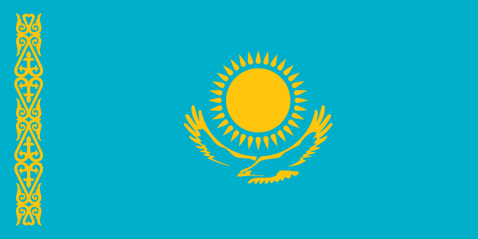
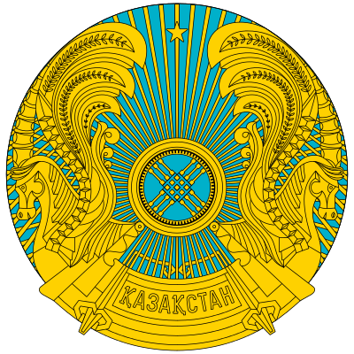

 
Қазақстан (Дыбысы Қазақстан [qɑzɑqˈstɑn]), толық атауы Қазақстан Республикасы (Дыбысы Қазақстан Республикасы) — Шығыс Еуропа мен Орталық Азияда орналасқан мемлекет. Бaтысында Еділдің төмeнгі ағысынан, шығысында Алтай тауларына дейін 3000 км-ге, солтүстіктегі Батыс Сібір жазығынан, оңтүстіктегі Қызылқұм шөлі мен Тянь-Шань тау жүйесіне 1 600 км-ге созылып жатыр. Қазақстан Каспий теңізі арқылы Әзірбайжан, Иран елдеріне, Еділ өзені және Еділ-Дон каналы арқылы Азов және Қара теңіздерге шыға алады. Мұхитқа тікелей шыға алмайтын мемлекеттердің ішінде Қазақстан - ең үлкені. Қазақстан бес мемлекетпен шекаралас, соның ішінде әлемдегі құрлықтағы ең ұзақ шекара солтүстігінде жəне батысында Ресеймен — 6 467 км құрайды. Оңтүстігінде — Түрікменстан — 380 км, Өзбекстан — 2 300 км және Қырғызстан — 980 км, ал шығысында — Қытаймен — 1 460 км шектеседі. Жалпы құрлық шекарасының ұзындығы — 13392,6 км[5]. Батыста Каспий теңізімен, оңтүстік батыста Арал теңізімен шайылады[6]. 2018 жылдың 1 қаңтарға елдегі тұрғындар саны - 18 157 078 адам[2] бұл әлем бойынша 64-орын. Жер көлемі жағынан әлем елдерінің ішінде 9-орын алады (2 724 900 км²). Елдің астанасы - Астана қаласы. Мемлекеттік тілі - қазақ тілі. Ресми тілі - орыс тілі. Қазақстанның ұлттық құрамы aлуан түрлі. Хaлықтың үлкен бөлігін қазақтар құрайды, пайыздық үлесі - 66,01%, орыстар - 21,05%, өзбектер - 3,07%, украиндар - 1,70%, ұйғырлар - 1,44%, татарлар - 1,17%, басқа халықтар - 5,56%. Халықтың 70 пайыздан астамын мұсылмандар құрайды, православты христиандар - 26%, қалғаны басқа дін өкілдері. Экономикалық көрсeткіштері бойынша дамушы экономика ретінде қарастырылады. Елдің жалпы ішкі өнімі ЖІӨ (номинал) = $225.619 млрд (2014). Экономиканың негізгі бағыты отын-энергетика саласындағы шикізат өндіру, ауыл шаруашылығы (егіншілік). Елдің негізгі валютасы - теңге. 1991 жылдың 16 желтоқсан күні КСРО-ның ыдырауына байланысты өз егемендігін жариялады және халықаралық қауымдастық тарапынан тәуелсіз мемлекет ретінде мойындалды. 1992 жылдың 2 наурызынан бастап БҰҰ-ның толыққанды мүшесі. Сонымен қатар Еуропадағы қауіпсіздік және ынтымақтастық ұйымына, Ұжымдық қауіпсіздік келісімі ұйымына, Шанхай Ынтымақтастық Ұйымына және Еуразиялық Экономикалық Қауымдастығы сияқты басқа да бірнеше халықаралық ұйымдардың құрамына кіреді.
Қазақстан Республикасының жер көлемі 2,7 млн шаршы шақырым. Жерінің ауданы жағынан дүние жүзіндегі ең ірі мемлекеттердің қатарына жатады. Бұл көрсеткіш бойынша Ресей, Канада, Қытай, АҚШ, Бразилия, Австралия, Үндістан және Аргентинадан кейін 9-шы орында тұр. Республика Еуразия құрлығының орталығында барлық мұхиттардан бірдей қашықтықта орналасқан. Республика батысында Еділ өзені алабынан шығысында Алтай тауы шыңдарына дейін 3 мың км дейін, солтүстіктегі Батыс Сібір жазығынан (Солтүстік Қазақстан жазығы) оңтүстігінде Қызылқұм шөлі мен Тянь-Шань тау жүйесіне 1600 км-ге дейін созылып жатыр. Қиыр солтүстік нүктесі (55 26 с.е.) Шығыс Еуропа жазығының орталық бөлігі мен Британия аралдарының оңтүстігіне, ал оңтүстік нүктесі (40 56 с.е.) Кавказ сырты мен Оңтүстік Еуропаның Жерорта теңізі өңіріндегі елдердің ендігіне сәйкес келеді. Қазақстан қоңыржай белдеудің орта және оңтүстік ендіктерінде орналасқан. Географиялық орнына қарай орманды дала, дала, шөлейт және шөл зоналары қалыптасқан. Елдің батыс шеті (46 27 ш.б.) Елтон және Басқыншақ көлдері маңына, ал шығыс нүктесі (87 20 ш.б.) Бұқтырма өзенінің бастауына тұспа тұс келеді. Аумағының 10%-ы биік таулы өңірлер, қалған бөлігі ойпат, жазық, үстірт, қырат жерлер. Қазақстанның ең биік жері – Хантәңірі шыңы (6995 м, қар құрсауымен қосып есептесе 7010 м). Ол Тянь-Шань тау жүйесінде орналасқан. Каспий теңізінің шығыс жағалауында елдің ең ойпат жері Қарақия ойысы теңіз деңгейінен 132 м төменде орналасқан.
Қазақстан — 1995 жылғы 30 тамыздағы респ. референдумда қабылданған Конституция бойынша – өзін демократиялы, зайырлы, құқықты және әлеуметті мемлекет ретінде орнықтырды. Қазақстан Республикасы – президенттік басқару формасындағы біртұтас мемлекет. Республиканың ең жоғ. өкілді органы – Парламент. Ол республиканың заң шығару құзіретін жүзеге асырады. Парламент тұрақты жұмыс істейтін екі Палатадан: Сенаттан және Мәжілістен тұрады. Сенатқа әр облыстан және респ. маңызы бар 2 қаладан екі адамнан сайланады. Сенаттың 15 депутатын Парламент өкілеттігі мерзіміне Республика Президенті тағайындайды. Мәжіліс республиканың әкімш.-аумақтық бөлінісі ескеріле отырып құрылған, сайлаушылар саны шамамен тең болатын бір мандатты аумақтық сайлау округтары бойынша сайланатын алпыс жеті депутаттан және партиялық тізім бойынша сайланатын 10 депутаттан тұрады. Президент Үкіметті Конституцияда белгіленген тәртіппен құрады. Тағайындалғаннан кейінгі он күн мерзім ішінде Премьер-Министр Үкіметтің құрылымы мен құрамы туралы республика Президентіне ұсыныс енгізеді. Қазақстан Республикасының Конституциялық Кеңесі жеті мүшеден тұрады, олардың өкілеттігі алты жылға созылады. Конституциялық Кеңестің төрағасын республика Президенті тағайындайды. Қазақстан Республикасында сот төрелігін тек сот қана жүзеге асырады. Ол заңмен құрылған Қазақстан Республикасының Жоғ. Соты және республиканың жергілікті соттары болады. Жергілікті мемл. басқаруды тиісті аумақтағы істің жай-күйіне жауапты жергілікті өкілдік (мәслихат) және атқарушы органдар (әкімдік) жүзеге асырады.